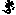

卍新纂大日本續藏經 第23冊
No.438 大日經義釋 (14卷)
【唐 一行述記】
第 14 卷
毗盧遮那成佛神變加持經義釋卷第十四
百字真言法品第二十三
阿字第一句 明法普周遍 以字而圍遶
彼尊無有相 遠離於見相 無相諸聖尊
而現相中來
復次祕密主於此三昧門句以空加持於一切法自在得成正覺是故此字即同本尊阿字第一句明法普皆圍遶無相彼尊現離相無尊相中而來者佛為欲滿彼修真言行者令圓滿故復說此三昧句也空者謂a 阿字也a 阿字即本不生不可得空也由此畢竟不可得之空具足眾德普攝一切佛法也此攝於梵音是攝取之攝如攝取諸物令在己身之義也由以此空加持力故能攝一切法成佛也此中自在者梵音與觀自在之自在有異此是攝取義謂能攝取一切法也如王者於其境內隨意攝取皆得自在如來法王於一切法自在亦如是也是故此字最為尊者言此字即是尊即為天為神天者眾中之首此字亦如是於一切法中最為其尊猶如世間地居天中帝釋為第一諸世仙聖中梵天為第一諸聖智中佛為第一此a 阿字於一切真言門中最為第一也由此一字成無量功德故無上也明即真言之別號也明法普皆自圍遶者謂從一字亦無量字生無量明周帀圍遶如前所說字輪也雖有如是圍遶而體即空寂滅無相於無相中見相即是相中而離於相又於無相之中而現有去來等事普應世間當知皆是真言不思議加持之力也以a 阿字加持自身故即同於此空於此字中而成就一切佛法猶如世間萬物因空得成而空本體無相於無相中而現種種形聲也尊是義字是相即與前品義同也。
聲從於字出 字生於真言 真言成立果
諸救世尊說 當知聲性空 即空所造作
一切眾生類 如言而妄執 非空亦非聲
為修行者說
聲字出字真言生真言生果成就一切救世者聲空知即空所作世間一切隨類如言而妄執非彼空非及聲二修行故說即聲通達入即三昧證依法置相應字照明阿字句多種真言想經文也依於a 阿字阿字即同虗空當知本來離相離相而有來去之相從阿字而有聲生阿字既本空所生之聲亦本空也所以者何此聲者約緣而有謂依喉舌齶等眾緣相待觸而有眾聲生但屬眾緣無有自性而此能生眾緣亦復從緣當知即是本不生也約字有真言生真言生即有果成就如是即救世者所說也若識此聲即與空等從空而有聲表於字空聲相依若能知此者所作世間事業其相萬端皆不出阿字門也以隨順世間故有分別而起不了者依此而生種種憶想執取之心然而實虗空及聲二俱離故即此偈互相釋也即入聲解脫(〔謂於聲得自在即證於三昧了知也〕)即是真言行者所說也若了知者即聲表於空空示於緣互相釋也此合移入二俱空中也即聲即空即此理即具萬德以識空聲等故即入真性之理入真性即是住三昧也與此三昧相應即是法也(更問)雖本不生而生一切法即百字輪青黃等種種色方圓三角等種種形乃至無量不可說等差別之相依此而照明也自佗皆空從空立理皆是加持用也進入者通達也由住斯理即是住三昧也。
依法置相應此相應作和合亦得也置與布同也以此字為照明照明謂成其德也一從a 阿字等類意例一切字也多種真言想想謂有所分別義例此於一字明解一切真言義也想改為分別種種真言名謂由一字中現無量義現無量說於一切眾生之類中各現無量言語皆從此一字生也於此中立眾多真言名也證此理者依法置相應字即是上來一字中置無量字形色各異如百字輪等皆依此而現應如是照知而觀察之當知此阿字有無量義無量種種差別真言亦如是也此字義乃是自本來今佛佛道同有此真理之字義也乃此成自然慧之妙門真言等行非世間人所立也即此如來自然智門非是始起亦非如來為一類眾生故創立乃佛佛道同法位常住雖從本自成亦要因緣方便乃得明白顯現也此中但明一字然百字法門皆可知故言百字門謂舉一字則百字可知也法謂眾多義非達磨之法也謂百字之軌儀也於百字中生種種德名法也。
次菩提性品第二十四
即騰百字法品中義而說喻也猶如虗空方一切無所依(猶如虗空一切方遍依常如是一切法真言救〔世〕常遍於一切法而無所依也)猶如虗空物(謂煙雲等)雖見無所依(謂空等中雖見一切日月煙雲等然空無所依也物等不依彼空也)真言救世亦然非彼之所依如教說虗空(世所極成也)遠離於三世真言救世者亦離於三時依真言救世者同虗空三世等離經文也猶如虗空遍一切方所一切萬有皆依之而得成立然虗空無所依如是一切真言皆依於此真言救世者而此真言本不生體都無所依同彼虗空遍一切處也此見是現見現量見煙等不染空亦然也唯住於名趣遠離作者等虗空但假名(〔謂有種種假名也謂世人說為虗空但是假名也〕)導師所宣說又如世間觀於虗空謂有所見而實虗空離一切觀不與眼對也又約虗空具一切相而非此空具一切相空亦不入彼相中自佗俱離當知此真言救世者亦如是與虗空無異也雖無所不有而畢竟清淨體同虗空雖同虗空畢竟清淨無法可得而無所不有無所不成也又如虗空離於三時即過去未來現在也真言亦爾隨世間故說有三世謂當修已修正修當證已證現證之類而實真言之體出過於三世等同於虗空況隨順世人說三世耶救世者謂約空見種種法此法既從本不生而生當知此體亦同根本也。
唯名行位作者等離虗空假名字等宣說道非名依所有如虗空真言亦然真言自在此假字見經文也唯住於名行此行亦可為趣謂有名趣謂唯名之趣亦名是趣也唯立於名趣(〔今謂即是言路之義也〕)虗空假名等(〔此等是順世間故立此名也〕)假施設也前偈云空但有名後偈意云此名亦同於空不可得也如虗空唯有名字而不可得離於作者如世間人以分別戱論故取是空相以為實有而生種種妄計或言虗空是常或言眾色所圍此孔穴中是虗空相或言此空依作者處而生此等諸見無量無邊如經論廣說以要言之皆不離斷常二見乃至二十小乘師亦立空法以為實有以是因緣有無量過失。
名亦無所有等同於虗空真言主亦然現住於假名(謂現量假立也)非淨穢受生或果亦不生(〔此或是多種義也諸果亦不生也〕)若無如是等種種世分別於彼常勤修求一切智句(〔謂志求此也〕)。
今此中云虗空者即是不可得空即是大空空亦復空但有名字而實體即不空離空與不空之相也導師以方便故假以言說以開悟眾生然亦空名字亦不可得若有名可存即是有相有相即心生滅不入實智云何得名阿字自然之慧實相之智耶如空無所依當知真言亦如是畢竟無所依佛以方便欲令眾生普門入於佛慧從空立假令依此假而志求於理空既本體無生從空所依之假從何而有當如是生於實見也如是知見即是菩提之性菩提性者不離真言耳此真言之義即是菩提離此之外別有菩提無有是處也。
非火水風地非日月等執非晝夜非生老死非損傷非kṣa 剎na 那mu 牟hu 呼rttā 栗多非秊歲等非成壞劫數非染非淨受生果或亦不生若一切無畏如是等分別種種世所於彼勤修常作一切智句樂欲經文也言真言之性非地水火風等如虗空遍地水火風此四依空成一切事而空無依此真言中地水火風等不思議用依a 阿字門而此a 阿字非地水火風之句也非日非月即九執等曜皆世人所立非真實也今此菩提之性無明無明等差別云何得有晝夜之異耶離於因緣實相常住即是大日如來之體云何不離生死耶害是損傷義亦是衰秏義也而此真言之性常恒無變離諸衰惱變秏之事無有時分劫數成壞之相當知如是正觀真言之性不依於妄執也乃至劫初時不成劫盡時不壞其本無始其末無終故離劫數時分等也以無所不有故非淨畢竟空故非非淨一切眾生以此阿字而具一切垢穢之法如來即以此a 阿字而成一切功德故非淨非非淨也若言從觀而生以有所觀有所成故隨行受生真言皆離此也乃至從淨觀功德從無量功德而受意生之身亦復皆空故無受生之果也以此等皆是有所得法而真言之性自然實智於一切法都無所得當知如上種種分別非真實見其數無量以要言之真言之性皆離如是世間分別之見也若了知此而如是修真言之行即是一切智句也樂欲者隨意即成也句是住處義一切智之住處即是佛住也當知菩提性等於虗空虗空等於菩提性菩提性者即是阿字門一切智句也。
次三三昧耶行品第二十五
爾時執金剛祕密主白佛言世尊說言三三昧耶云何說此法為三三昧耶如是說已佛告執金剛祕密主言善哉善哉祕密主汝問吾如是義祕密主汝當諦聽極善作意吾當演說金剛手言如是世尊願樂欲聞時金剛手問此三三昧耶法言此者前已說之而不周備騰上而問故言此也問意言此三三昧耶者何法是三三昧耶佛以此問是大事因緣故加歎已而誡令諦受乃至唯然受教如文可解也此三三昧耶大本中廣釋可有一千二百偈今此中舉其大宗餘義不出此門也佛言有三種法相續(〔相續是其相生也〕)除其為障與無障相應言障除即是無障相應生也名三三昧耶(由與瑜伽相應無障即三三昧耶也)云何彼法相續次佛答中初三法者相續不間斷是三昧耶義然梵音相續與障義同亦可具含二旨也以相續若有間斷即非三昧耶此即障生故兼二義也所謂無間相續者即是言行相應心口相應一發心已身口所行不相違越口有所誓心行亦如是修之名三昧耶也。
經云初心不觀自性(〔本性也初也〕)從此發慧如實智生(〔謂了實相了是智也〕)離無盡分別網是名第二心菩提相無分別三菩提句祕密主彼如實見已觀無盡眾生界悲自在轉無緣觀菩提心生所謂離一切戲論安置眾生皆住無相菩提(〔謂此大悲願也〕)是名三三昧耶句此三中最初但能發心誓欲成佛然未能正觀如來功德不能了知以何法而得成佛未能具有觀照之慧但有求佛之心而未能了達自己身之本性有何功德但有此慧性能於生死中最初發心而求佛果此是初三昧耶也從此心後得如實智生謂能以慧決擇了知此是功德此非功德等是處非處邪正之相以得如實智故能離無盡分別妄見之網善滅諸戲論安住真實相中然此實智即是菩提心也三昧耶是等義此心等發名三昧耶也初心雖未具實智然亦誓成佛度人即是等心故亦得三昧耶名也從此第二心相續無間無障故次即於此真實句中了真假已於一切無盡眾生而起大悲心是第三三昧耶也以一切眾生皆同此性而不能自了而受生死輪迴無際我今已自覺了當普開佛之慧光令悉如我即大悲也由見實故非實自除非從外有法來入身也除妄時實相自現也上說此經有三句義菩提心為種子即初句也大悲為根即第二也前以大悲為根今乃居第三何耶此中以照了為根以能照了是非故方能生悲義相成也第三方便為究竟此云大悲亦相成也由興大悲故施方便而攝一切此三事從初至後相續不間名三三昧耶也以住真了妄為彼眾生故而興大悲除一切眾生戲論從此以後即以方便而作佛事也戲論者如世戲人以散亂心動作種種身口但悅前人而無實義今妄見者所作亦同於彼故名戲論也菩提眾生住者為令眾生住於斯法如我無異即是安住諸子祕密藏中之義也。
復次祕密主云何三三昧耶最初名佛心初心等正覺第二名為法彼續次生心所謂名為僧此三三昧耶導師如是說住於此三等修行菩提行次種種導首(〔謂廣流布種種道門〕)為利諸眾生當得成菩提三身自在轉引攝諸眾生次三三昧耶初以大悲方便成佛次從佛有法次從法有僧此三即一體其實無二性以是等故名三昧耶也(〔前別時解云sa 娑是佛ma 麼是法ya 〔也〕是僧義也〕)。
復次三三昧耶者謂住此三昧耶即成菩提住菩提為眾生故現種種色說種種道當知即以此心能攝三身是三昧耶義也如上說三寶是三三昧耶也三昧耶是等義即此三寶等故名三三昧耶從此三三昧耶次具三身亦名三三昧耶也住三身故有利益之事利益何等即是利益眾生也住三身中示現種種道亦攝得眾生攝是自在攝取義也。
祕密主佛正教表示作一身加持所謂初變化身者教即十二分教也此中種種方便祕密主三藐三佛陀安立教故以一身加持所謂初變化身復次祕密主次於一身示現三種所謂佛法僧復次祕密主從此成立說三種乘當廣作佛事現般涅槃成就眾生利益眾生皆一身所持所謂變化身也由住三昧耶故有如斯利益也。
次於一身中示三身謂佛法僧也即是一體三寶當知皆是從一身之中起也此中三三昧耶皆相承次因前生後也次承上復有所生謂示說三乘廣作佛事導利眾生所作辦已入於涅槃涅槃之後復成就無量眾生也謂一類眾生佛在時未能發心因佛滅度或於遺法之中乃成就皆是也。
祕密主觀彼解了三三昧耶諸真言門修菩提行諸菩薩等於真言法則而作成就彼不著一切妄執無能為障礙者對此有異名為餘不欲懈墮無利談話不信心廣積集資財復應不作二事謂飲諸酒及臥牀上祕密主觀彼三昧耶知諸真言門菩薩修行真言法持誦彼不著一切妄執住無為障者經文也。
佛告金剛手觀彼上來所說皆由住三三昧耶由住此三昧耶如法持誦心心不間所謂不著一切妄執也由妄執故諸障得生若住此三平等者即不著一切妄執即此三平等者即是菩提諸障何由得生耶此即是離一切障之大宗也復有餘障生之由謂不欲(〔即於此真言行中以有障故歘爾無由樂欲是也或由不欲心生故障得入之也不欲即是不願求等也〕)懈怠(〔以不勤進故如鑽火未熱數息即障入之也〕)又無益談論於真言行不念誦不勤修行以此虗度時日亦爾障得其便也又不信(〔由不信故障得便也〕)又廣聚資財以求時紛動守護勤勞失時受苦以如是等種種因緣令行者為障所得便也以上皆是障生之緣復有二種謂不得飲酒酒是生障之緣此第一也以飲酒故諸不善得生故也又不臥牀上此第二也以安寢牀上生種種欲心放逸之想故不得也當敷艸藉西方持誦者多用吉祥茅為藉也此有多利益一者以如來成道時所坐故一切世間以為吉祥故持誦者藉之障不生也又諸毒虫等若敷此者皆不得至其所也又性甚香潔也以此艸極利觸身易破如兩刃刀形也行人持誦餘暇而休息時寢此艸藉若放逸自縱即為所傷故不得縱慢也又佛所以自藉此艸者除世間憍慢心故為太子時種種逸樂坐臥寶牀寶机承足等若出家猶習之即與本在家無異以能捨如是事而坐艸藉一切人天皆生敬心亦效除慢心入正法佛尚如此況我等耶行者觀如是功德故修行此也。
說如來品第二十六
爾時執金剛祕密主白世尊言。
云何為如來 云何人中尊 云何名菩薩
云何說佛名 導師大牟尼 我於此有疑
願斷我所疑 菩薩大名稱 棄捨疑慮心
當修行大乘 行王無有上
爾時毗盧遮那世尊觀察諸大眾會告執金剛祕密主言善哉善哉金剛手汝能問吾如是義汝當諦聽極善作意吾今演說摩訶衍道頌曰。
菩提虗空相 離一切分別 樂求彼菩提
名菩提薩埵 成就十地等 自在善通達
諸法空如幻 知此一切同(〔謂知此一切皆同也〕)
知諸世間趣 故說為佛陀 法如虗空相
無二唯一相 正覺十力具 是名三菩提
唯慧害彼者(〔唯作以亦得謂以慧害煩惱也〕) 自性無言說
自證之智慧 故說為如來
此下依梵本經文大乘道虗空相菩提一切分別離若彼菩提樂求菩薩名此答菩薩名也虗空無有相菩提亦如是猶如虗空無相無分別又虗空無相而眾德所依萬像依之而立菩提亦如是畢竟無相無分別而具一切功德也於如是實相欲求證達是名菩薩。
次釋佛義此下梵本經文十地得成自在善通達知法空如幻此一切同趣行知一切世間於佛得名此答佛義也謂滿足十地自在通達於一一地中皆善通達而得自在了知諸法同於空幻又知眾生深心所行心所趣向以有斯德故一切世間號之為佛佛之名覺字因斯而起也此下梵經文虗空相法無二唯一相十力佛是名正覺亦號釋迦佛義也前但云知法空如幻今云虗空之法一切無相即以此中了達故以十力遍知一切法無所不知如菩薩藏經中說十力甚廣也此菩提如虗空無二相於一相中心無所住以此故得佛十力由正住此十力名正等覺也佛與正覺名號殊而體一也善調身口意攝伏自在故能降諸魔非但降於外魔內障亦遍降伏之世出世中以為尊故復號人中尊此義經中闕文不釋餘處如是解也。
已下梵經文慧害唯無言說自性自證智說此是如來此答如來名也此慧能害無明故云慧害雖不云無明然所害者即是無明其義自顯也此自證境界出過語言道以知自證非可宣說而授與人住如此智故得如來名也又如佛之理自然而證名為如來又如諸佛所行之道自然證處我亦如是而去故名如去也大本中具答此各有百餘偈傳法者但略其宗要各一偈答之其大意亦具也。
次世出世護摩法品第二十七
外典淨行ve 圍dha 陀論中有火祠之法然大乘真言門亦有火法所以爾者為攝伏一類故以佛ve 圍dha 陀而攝伏之然其義趣猶如天地不可相竝今欲分其邪正之相令行者無復餘疑故傳法人於此品中廣出緣起也佛欲除彼未來世中諸淨行者我慢心故自說本生作梵王時演外典ve 圍dha 陀之法令彼邪宗心伏然後說此真言門正行也。
復次祕密主往昔一時我為菩薩修菩薩行住於梵天行菩薩行即是梵住此梵天也時梵天問言大梵欲知火有幾種時我如是說言謂對彼作如是說也彼火名我慢自然次梵天子所生火名以pa 簸va 嚩kā 句是世間最初之火謂我先世行菩薩道時示作梵王爾時有諸梵行學者而來問我火祠之法有幾種火我具說之今成正覺乃證前說為非今說為正是故行者當從今正行之火法不應用先虗妄不正之法也。
以下次分別邪宗火祠之法皆是圍陀典中所說也先說火神之本最初是大梵王以彼有如是計一切皆從我生有如是我慢故又計自然常故得我慢名及自然之號即大梵王也次梵天子名梵天子即是大梵王意念欲有眾生而彼應念而生大梵天王以為己所生子所生子者此是梵天子是彼天火天最初也(〔自然生者〕)。
次梵天子所生pā 簸va 嚩ko 句(〔此是世間火天名也〕)從此以下次第相生皆是彼法中火神也但供養而無用處也。
梵飯子(是火天名即梵子之子也)pi 畢ta 怛ra 羅(又其子也)ve 吠śva 稅na 囊raḥ 囉(又其子也)ha 訶va 嚩no 奴(其子名也)ha 合vya 毗vā 嚩ha 訶naḥ 囊(又其子也)pā 簸śa 說saṃ 三bhya 鼻to 覩(又其子也)a 阿tha 闥rva 末ṇa 拏(又子其也)pra 鉢ṣi 佗ta 多(又其子也)pu 補ṣka 色迦(二合)ro 路dhau 陶(又其子也)已上皆供養者也置胎時用者(是淨行者初娶婦置胎時〔用〕〔ma 忙ru 路to 多火〔也〕用此火神名ma ru tā 呪加之也火神名在經中此不出也下同〕)。
欲後浴時者(〔彼受胎六月夫為其浴仍結〔髻〕為相以此火神名真言也名va 嚩ha 訶dā 那na 囊火〕)浴妻之時用maṃ 瞢ga 蘖lā 盧火生子之後者(〔生子七日後浴妻又母解髮用此火神也名pa 鉢ga 伽lbha 補火〕)。
立名時者(〔其子既生請仙人作法立名之時用也名pā 簸ṭi 體vo 無火〕)。
食時用此火者(謂子〔能〕食時父母先以此火神呪加持蘇等然後噉之圍陀一一有方用也名śu 戍ci 指火)。
為子作髻時(謂子漸長鬀胎毛〔髻〕時留ṣa 朱ḍa 荼之髻用此火神也名ṣa 殺bhi 毗火)。
受禁戒時(是童子漸長與持本族戒時也有文闍艸似此間佛〔前〕竹治之作繩三股線繫身絡背持曲〔枝〕即古云〔三歧枝〕也名sa 三mu 謨dbha 婆vaḥ 縛火〔軍持披鹿皮衣其服戒也持戒十二年常乞食持赤銅鉢乞食時作此言有〔者施〕住少時不得即去歸至火爐分食為三分浴已取一分食供養火神取灰印三處參父母師已以一分食與其隨彼食與不食任意也然後自食一分於十二年中勤苦學韋陀法十二年滿方出梵種為娶妻也名sa 三mu 謨dbha 婆vaḥ 縛火〕)。
禁滿施牛時(謂戒滿十二年已須報師恩以物報償并母牛及犢子施師師受已又令彼婚故說娶妻因緣告言過去劫初梵王下世間修牛形而行婬欲因生種類由此有婆羅門種今此母牛生子即是其遺法爾宜効之繼存梵種乃至廣說爾時用此火加護彼皆火神名〔也〕su 素rya 里耶火)。
子婚時(然彼婚法娶妻時誦火神梵天本呪大意言梵天本意〔云云〕我今繼行梵天牛行今此產門即同梵口而生四姓乃行〔牛〕行也名yo 瑜ja 〔者〕kaḥ 迦火)。
造作時者(〔即以下供養等諸業初受此法時火神名別以後造作又隨事別有火神呪等也u 鄔pa 波na 那yai 易kaḥ 迦火〕)。
供養天神者(〔彼法供養時取銅作椀有兩柄即華果葉及米等諸食盛滿之其法云一切天神皆供養也〔供養〕如家中井竈門戶堂屋之類一一皆遍每處持〔一〕撮食與之而誦其神之呪乃至門戶施竟餘食置屋上以與先祖等及餓鬼也名pā 簸va 嚩ko 句火也〕)。
次造房(用梵火造立房等亦須以法加之便成淨法不然不淨也名pra 鉢羅hma 羅火梵也)。
行惠施時(即施其類也此淨行者不與三姓〔語〕物〔彼〕亦不與之但於自類而行施也施時稱此火神名以呪加之本意云此物從梵天得今還施其〔梵〕汝亦是梵天也下句亦云svā 莎hā 訶名śaṃ 扇tto 〔都〕)。
縛羊之所用時者(〔謂戒已滿梵種已出四姓已具得殺羊而〔食〕也彼法云梵天生四種故娶妻四姓之女各各生子即是梵天生四種也然所生子自有優劣其殺羊時首陀所生之子侍之剎利所生之子殺之毗舍所生子割之婆羅門姓所生子食之當其時亦以真言加之此即婆藪仙〔人〕遺法也名a 阿va 縛ha 訶nī 〔寧〕〕)。
觸穢時者(〔謂失淨法如沙門犯戒也謂有時放逸不覺人截割其髮或絡身繩斷或三奇杖折或食時為首陀觸等欲懺悔自罸集三二百同姓者大眾中自悔爾時諸淨行者同聲言日月諸天證知此人從今已去復清淨如本也時懺悔者〔因大〕供養彼等爾時用此火天神呪加法也名vi 微ve 吠ci 至火〕)。
熟食時者(〔彼法凡欲作食〔時〕先取生〔米〕物等以此火天名呪加之成淨方熟之若誤不作則失法不成淨食也名sa 娑ha 訶sa 娑火〕)。
拜日月者(〔彼行法〔者〕日未出時合掌東方望日日出即拜謁誦呪以此火神法作之至日欲沒〔又〕向西送之如上法每日如此又有都集處多人同作也〔日用ha 合vi 微je 誓ya 耶火歸已至月出時又於家又迎候禮敬所用神呪亦別也月用ni 你dhi 地〕火也〕)滿燒(〔此是施火食法取食盛滿於一器鑪中燒之也〔名a 阿mṛ 密栗ta 多火〕〕)。
息災(凡災事令息用此火神呪名da 那ru 嚕ṇa 拏火)。
增益(用息災等神呪言此威猛如劫災之火〔其〕勢猛盛即火神真言名也〔名kṛ 訖栗tā 旦ntā 多火〕)。
除障(〔即降伏也即用忿怒火〔神〕名也kro 忿dhā 怒火〕)。
攝召(謂凡所求事欲成及令人喜見等也用迦kā ma 摩no 奴火)。
燒林木(〔彼法不得焚林木等然有時稠林枯萃欲燒之令更新茂義用此法也使者火〕)。
煖腹(謂貪已〔令〕身中火煖腹中食令消化其食無病等用也其真言意云以持我身若從我身出即我子也名ja 社ṭha 咤ro 路火)。
授諸火食等用(更問用bha 薄kṣa 叉火)。
次海中火名va 嚩ḍa 拏vā 婆mu 目kha 佉劫壞時火yu 瑜gā 乾nta 多火但舉其名無用處也(淨行有在家〔出〕家若出家者從童真行即入山〔求〕道乃至得五通無此娶妻等法也)。
右以上皆梵行事火者邪護摩之法佛為顯正故騰出已方辨真法也祕密主我於其時不知彼諸火性作諸護摩亦非護摩行以下又偈也。
又非得業果 為汝諸仁者 已略說諸火
修行吠陀者 梵行所傳讀 此四十四種
我爾時所說(十二火次說也) 我復成菩提
說十二種火 彼火復云何 智火最為初
名大因陀羅
佛意言我爾時為大梵王以諸梵眾來問我依韋陀典而演說之令彼依此修行獲得世五通等事然我爾時未了火之自性及其業用以不知故當知爾時所作之事不名善作亦不得名為護摩非行非業亦不得其果及我成菩提時方了火之自性及彼方便作因果等所謂火之自性者即是如來一切智光也佛所以如此說者欲伏諸外道分別邪正令彼知有真護摩故以諸淨行等於所宗ve 韋dha 陀之典自謂祕密而生慢心今佛自說ve 韋dha 陀原本而於其中更顯正理真護摩法此佛ve 韋dha 陀當知最為第一祕密之藏彼聞已生希有心即生信解也我昔未成正覺無所曉知略說如上四十四種火法廣則無量如彼ve 韋dha 陀典中具明今成正覺復說真慧之火十二種法所謂能成大事除盡一切垢障之暗而成大事不同往昔邪道非法之行也。
第一名為智火方名稱色黃端嚴增威力與火光焰三昧住知智滿足此中智火者即是菩提心之慧光也形方色黃即是表金剛座也端嚴者是內莊嚴言此智火本尊之形具一切佛功德故也增威是外事謂十力等用也此智火者其性如是內外功德莊嚴圓滿能與十力故名增威也由識此火故燒無始以來無明薪積無復遺餘如劫燒時火灰燼皆盡蕩然無垢一切如來功德自然成就也然此火神即名為智其相端嚴作金剛色以圓光燄鬘而自圍遶處此光中寂然正受三昧由住此三昧故智性滿足此智光者即是vai 毗ro 盧ca 遮na 那之別名也即以此尊而表此智若初觀即觀此火神能成一切事若深了其性即如上說也此中方壇者梵名ma 摩hā 訶ī 因ndra 陀羅是帝釋尊之別名又則金剛輪別名也智是內證其外發之表作金剛杵形此方座形與相似也然但觀四角之壇中有本尊即是也(此杵頭有四角形也)上云增威者若作形像所表而論即是體皃圓滿豐備之言也然據理之言即心法門也然火有二法若但修瑜伽者唯觀此尊形表之相而誦智火真言(其名即是也)即名內心火法若順攝世間故而作壇者當作方鑪而周帀有光焰自身亦著黃衣想鑪火中有此本神住三昧如上然後所作事成不然不成也此法與息災相應是堅固法也此配初菩提心即a 阿字門也由此因緣智具足也。
第二火者名為行滿即案名表義其梵音亦即真言也初發菩提心次修於行其行滿者即名為佛也(〔私謂此即大悲為根次菩提心種子阿也〕)其形如秋夜月光暉照朗四面周帀身服白衣具種種德(〔謂身端嚴肥滿可喜也〕)其右手持數珠左手令持軍持也此像住於月輪中也如上所說即是心性圓明清淨之義以此妙行之火焚於垢心戲論穢惡之薪也若作觀時亦即觀此為本尊形也上文云皆體如來內證之德彰於外故以法門表示故也若外作者為圓鑪以白檀末塗以白華等為供養自亦著白衣此是息災法也災有無量謂外世間如水火虫霜降等種種災秏及內身一切病惱之類其相萬端自身佗身皆能淨除之也又無始以來有疑心謂於深法而生猶豫不能決定信此即障也此火能淨除此障亦是息災義也此息災護摩亦有二種但瑜伽相應念誦或外護摩而作火法也然若能辦供者須兼事常作善若不辦者但心作即得有物可為而不作之但以心作亦不如法也。
第三火尊名為風燥從風所生是為風子形燥黑也此謂內色黑而外加燥形如上塗灰等也此尊處風輪中即半月形也亦作端坐三昧之形謂行人初發菩提心雖欲進行而無始已來妄惑煩惱根本未除數來牽破觀心而加暗蔽須作此法風是不住義又如世間風能壞重雲此不住之火亦如是能散壞諸障也此尊坐風壇中手執帛去頭三五寸兩頭執之如天衣形其色青也(此是表風義也更問)此是a 阿bhi 毗ca 遮ru 嚕ka 迦法亦有內外二法。
第四赤如日暉住三角中右手執刀端坐刀表利慧斷結也如日暉光是也如世日初出時色也如世日初出時夜除晝現暗盡明現故取此色也火神如是形色光焰亦然身相端嚴圓滿如前作住於三昧作微怒形也。
第五mṛ 沒栗ḍa 拏是火和合義也此尊作淡黃色謂黃兼有火色也和合者是兼二法也其像左邊作怒狀右邊作熙怡微笑形各半身也(〔此微笑是不瞋不大喜寂住也〕)身上有毛謂髭鬢髮之類稍多然不可過差多置令不端嚴也其項長而有大威光其身色一邊赤一邊黃也(怒邊當赤也)其坐亦右方(半金剛坐也)左三角(半火坐也)左持刀右持va 跋jra 折囉有內外二法例前也此和合者能遍一切招召息災俱成也內用即智光煩惱即滅無生也若外作時香華身服亦須二種念誦時亦作此形如本尊也仍一目怒一目寂然災除願滿一時得成以此等遍之理故得有如是之用不同偏方之教也。
第六火神名為忿怒即以此名義為真言等如上也其身烟色者謂非甚黑非甚白閉其一目(如不動尊也)其髮散上如蓬頭之狀作大吼形謂如開口大呼吼狀也口有四牙俱出二上二下此亦攝二事一火一風也。
第七名溫腹如上世間火中謂是身內之火能消化食物資身也此正法中義則不爾腹內之火即是內證之智也迅疾謂其形更加忿怒又甚於前也極忿謂作此aḥ 噁字也有種種色謂形具五色也義準前。
第八名費秏是除遣義也謂一切業垢等事令無餘也此尊能除身中一切障即vi 毗nā 那ya 也ka 迦之類皆令消秏也其色如聚集眾多電光難可瞻覩之狀此是金剛輪同類也。
第九名意生謂從意所生之法隨意成也種種形皆能作所念皆能成就巧宜謂vi 毗śu 首ka 羯rma 磨也即是隨類現身普門成就之義自在之慧隨作皆成有大力也。
第十受食火名kra 却vyā 微dā 謂火施時受飲食之義也受食者謂施火食時受而食之(更問)其尊作持oṃ 唵字印者是梵志儀法也淨行者凡有所言語皆側右手作印形而舉案之以oṃ 唵字聲而作相故也。
第十一火本文缺少。
第十二火名悉成謂能悉成一切即是所作已辦處寂滅道場而伏魔義也又如有一類眾生一向為惡不可止遏縱加勸導更增其惡若縱之又趣惡道以方便故而伏其身令其迷悶都無所知以此因緣善惡俱不能造次即漸引導之令入正法也如金剛頂又金剛手降伏大自在天義說如上也此皆住方便道所為也祕密主此等火色所持隨自己色(謂火神〔色〕)藥物等同彼謂隨彼色類也又偈云。
而作外護摩 隨意成悉地 內復祕密主(謂次明內法也)
一性而具三 三處合為一
瑜祇內護摩 大慈大悲心 是為息災法
彼兼具於喜 是為增益法 忿怒從胎藏
而作眾事業 又彼祕密主 如其所說處(謂隨類用)
隨彼相應事 隨信解焚燒
自己色及藥物彼同外護摩作此悉地隨意者言此十二種形色及所持物等須識其性前內外合論今說外也三和合為火不異神神不異自身也彼同是自佗俱同也內作者本尊即火火即自身也今謂理釋者本尊即是毗盧遮那此毗盧遮那不異自然之慧火此火不異於我身也即以一自性三和合名內護摩也和合謂本尊即火火即同於自己三事等也上文如意悉地者隨世上中下事隨意即成也若不了此火法無由得成也內法亦相況耳若了此慧火者隨出世上中下成就隨心即成也復次三和合者謂身口意也身印口真言心本尊此三事和合畢竟等故是名三和合也若能觀本尊則自身漸淨淨即同於本尊若見一性即三事俱淨也平等皆是。
次明內護摩法即以此三事等中若作息災即用大慈大悲此三平等大慈大悲和合時一切息災尊為第一也若作增益即以悲及大喜和合也若忿怒者火為胎作事胎即心也謂有因緣須作忿怒之事降伏於人即從其內心中而起於忿此忿非如世間之忿怒也謂從大悲心中照了忿之實性而以方便起之以降伏惡法也如是等但內作護摩即能辦諸事也故凡護摩義者謂以慧火燒煩惱薪令盡無餘之義也然今此中略說所用火神及內外之相當知諸餘法教之中皆有火法等隨應作何事者皆準此法住於三昧隨彼相應而施作之即成也若不如此但焚薪木虗盡供養畢竟濫於外法又不能成也又經所言物者謂所緣火法薪蘇食物眾具也。
爾時執金剛手白佛言世尊云何世尊(問世尊云何也)云何火鑪三摩地云何散灑云何順敷茅艸謂願佛說也金剛手又問佛上來數聞此火法然猶未決當於何處置火何處安鑪等更有何法也謂散灑敷茅及以物等皆問佛也。
佛告執金剛手祕密主言祕密主彼火鑪如其肘量普皆四方其緣四指金剛圍之以下亦偈佛答之謂意彼火鑪如肘量普遍四指緣金剛圍之謂隨所住處穿深一肘方亦如是口上安緣高闊皆四指(用大指節量也更審)緣以金剛圍之(〔四面各一相接如上八印等中說也〕)普者謂深及方令等也如方鑪者三角半月圓等可知也藉以青生茅遶鑪而右旋勿以末加本應以本加末(謂勿以梢押根〔當〕以根押〔梢頭〕也)次第而右灑茅須青溼右遶敷之者謂布茅緣上之法也當令根首相押首是上梢之苗也假令布東方時茅根在北苗在南仍以苗押次南者之根不得以根押苗也次第右繞敷之至南方即須根在東方苗頭向西乃至北方次第準之也灑水謂閼伽水也閼伽別有方法如悉地中說耳然此灑水有二法若以茅作小束置於閼伽椀中而灑之灑時順灑右旋灑也若直用手灑亦得然須順灑也此又二種若初淨火時須右旋順灑若淨了供養之時當直灑之不須旋轉也如悉地中辨之然未灑時須請火尊有真言及印上品已說乃是此中所用也灑了獻華次第供養諸物爾時當觀本尊形在此鑪中取上真言遍灑也滿施者即是用杓投物之火中也杓有二種初大方杓名滿施當滿盛投火中次小杓即相續取內火中然亦須滿盛也別有法亦如悉地中說今略指息災增益折伏三事當知一切事準此而作也法教當如是奉塗香華燈當獻於火天沒栗(二合)荼火以一華供養安置於座處安置已真言者復灑之也智者以本真言而作滿施次息災護摩或問增益法如是世護摩說名為外事。
復次內護摩滅除於業生謂業生滅也了知自末那謂意也遠離色聲等眼耳鼻舌身語意業復次內護摩業生滅了知彼意者欲識意當離於境既離境當知亦離根也(謂其語在舌攝)身語意等悉從心起生依於心王而起也眼等分別生及境界色等由慧未生時依心王有妄也欲息此者用風燥火滅之謂以智風火燒也燒除妄執令得淨菩提心也閉口有淨語也此名內護摩為諸菩薩說也以慧是火由風而生慧是止淨心為觀此已上明世間之事今此說內護摩出世之事謂以智火除業生等也從業受生從生復造業輪轉無已今言護摩者正是淨除此業令得清淨法生也業生既除然後用意生意即心王之異名此從心生法離色聲香味觸離眼耳鼻舌身意此等皆約心為主約此心王而住而生分別當以慧淨此心王即一切法淨也然慧未生時為障法所動當準上文取風燥而燒滅之須用上文深意也由慧未生即有分別以分別故有根境等垢障今用風燥之火而淨除之此火即是菩提心也約此菩提心火而燒妄想等事悉令淨除是名內護摩義也如是知者乃可名菩薩也所云世出世者即是事理兩法也事即方便所加之火出世即是慧性之火也若世間火天作梵天形今內法火神作三摩地形寂然住三昧也。
次說本尊三昧品第二十八
爾時執金剛祕密主白佛言世尊願說諸尊令威驗現前令尊現形諸真言門修菩薩行諸菩薩猶作其形令行者觀緣尊形即本尊形同於自身無有疑惑而得悉地如是說已佛告執金剛祕密主善哉善哉云云佛言祕密主諸尊有三種形謂字印形貌彼字有二種謂聲及菩提心印亦二種謂有相無相正是色義謂有像無像也尊形亦二種謂淨非淨彼證淨形形謂身也體也離一切相非淨有相之身即有顯形眾色彼二種尊形成二種事有相故成就有相悉地非相故隨生非相悉地上亦例著之次引佛為證有相欲持成有相佛常如是說也若心住非相即成非相也佛語先標之也是故一切種當住於非相言事隨心故隨心故宜求出世也觀本尊形已為無疑悉地得此以上金剛手問也本尊者梵音sa 娑dhi 地de 提va 嚩tā 多若但云de 提va 嚩tā 多者直云所尊之義也本尊亦云自尊謂自所持之尊也然彼行者猶身印真言及觀本尊此三事和合故本尊即自降臨道場而來加被也然此行者初行之時尚是凡夫自無德力何能即感佛菩薩等隨言而應耶但由彼佛菩薩等先立誠言大誓願故若有眾生依我此法而修行之不虧法則者我必冥應或雖不來而遙加護之若行人法則如法而不應赴即是違本所願故不得不應也亦如方珠向月而水降圓鏡向日而火生因緣相應而無思念此法亦可為喻非是諸佛有心行而同凡夫之赴應也若心不相應事緣有闕則本尊不加護念故無應驗非佛菩薩等之過也然行者以此事故當須正觀本尊清淨之身若見已即以其身而為己身如是無疑慮者所求悉地無不成果也經云緣觀者即是行者各各約其本尊作如是觀也無疑者由與彼尊相應故無復疑難之心也是故所修必成已上問竟。
佛言善哉善哉祕密主汝能問吾如是之事是故金剛手極善作意我今說之乃至願樂欲聞以金剛手善能次第問疑為勸未來真言行諸菩薩故又復慰諭誡勸也。
次佛言祕密主本尊形有三事謂字印形也形即尊形也彼字二種聲菩提心者謂行者最初修行字略有二種觀於字義一但觀菩提心此菩提心即是字也謂a 阿ka 迦ca 遮ṭa 吒ta 多pa 婆ya 野等但舉其首然諸字皆是也以為初首故云菩提心也或觀字輪謂以所持真言為輪形入身如上持誦品說或觀種子字皆是也或不觀字但念於聲謂上觀此聲如鈴鐸聲等次第不絕及以此聲調出入息如上說皆是也已說字竟。
印形亦有二種謂有形無形也形即是青黃赤白等色方圓三角等形屈申坐立及所住處之類也印謂所執印即刀棓羂索金剛杵之類也初心別緣而觀謂先觀畫尊等約此而觀名為有形後漸純熟又以加持力故自然而現與心相應爾時此本尊但從心現不約外緣故云無形也私謂或可初得世三昧見其本尊如是形如是色如是住處坐立如是漫荼羅中持如是印等猶是有相故名有形後持真言宛然直見如鏡像等不相而相故名無形也。
次本尊形有二種謂清淨非淨謂彼行者初因有相引入無相先觀圓明佛菩薩印身初作不見約畫像等而觀漸約法力所加漸得明了尚有所障閉目則見開目則不見次漸開目閉目皆得明見漸漸不加作意亦見乃至觸身亦復有礙猶如目對世人等也次約此有相漸引入於清淨處以有相故名為非淨由此sa 三ma 摩hi 呬ta 多所等引故住清淨處寂然無相名為淨也淨者是果非淨是因非淨謂形色印像之類也由此非淨引而成淨由無常之因而至常果也私謂此三事各有二種即行次第也觀持真言觀於字次觀聲漸細次觀形尊又細次不約緣而觀又細次觀就無緣又有雜不淨及純淨也或可橫說之此三事出各有世出世方便故皆有二也。
經云彼二種者謂上來三事各有二種也彼二種中即有二種事成就有想故有相非相故非相悉地隨生等云云謂若以有相事觀見者事相有相有得成就若無相者亦得無相悉地成就也又云此三事二種中隨以一事即致成就然皆有世出世成就及事成理成也故前三種中各有二種成就二事。
經云有相有相欲成若住非相則非相成就是故成種種事當住非相此勸令離一切相住於非相也結勸也以住非相理成就故一切不思議神變不加心相自然而成妙業非如世間成就在於生滅心行之中而力有限又非究竟故勸求其勝者也私謂然大般若等中具說洗滌觀心之事然須有本也今行人先約別緣起觀乃至具見十方佛會諸世界等種種境界以為悉地而後於般若洗滌淨除即成不思議大用頓入佛果若不知行行次第但觀彼文不入深智多錯會經意直爾入空失圓頓道也故此一兩品最須諦觀其意耳。
次無相三昧品第二十九
復次大日世尊告執金剛祕密主言祕密主彼真言門修菩薩行諸菩薩樂欲成就無相三昧當如是思惟相從何生為自身耶自心意耶彼身因業而生等艸木瓦石謂自性如是也謂業生之身自性如是也頑同木石業生謂從心起此觀是有相有相為外外所有身語等如是觀之也頑同草木性離於分別作謂業由心生也從因業生是內也外謂土木造立是外也。
佛告金剛手祕密主彼非想三昧成就願欲真言門菩薩行修行諸菩薩如是思惟從何相生自身自心意者即是修瑜伽者已能觀於本尊等乃至現得種種奇妙之境然猶是世三昧攝未得三平等慧今更開示入三平等觀也若此觀明白了身口意實相即入淨菩提心初法明門上菩薩地也(〔此是私釋然大意如此也〕)先明身實相觀者謂經云彼身業生艸木塼瓦等性如是作離頑如外作或業生如形像見等經文也上來言當住非想等今此品中若修真言行者若欲得此非想三昧成就者當造斯觀也。
經云自身自心意者謂從心有思生心是清淨心意是分別也(更問)然此身同木石其性頑愚者言此四大若離於心即同木石也如大般若觀身念處中說如明目人自觀倉囷之中種種米麥等此身亦如是身念處觀開時自見三十六物各各異相爾時身相即除如開倉見米麥時倉囷名除也乃至一一皆緣生次第深說也。
次又明以身同於像也如作像者以土木雜物和合為像或佛或天或餘父母形等以不善觀故隨生所尊所愛之想然一一細觀但眾緣合會都無自性今我身亦爾諸界假合自不了故而生身見若細觀時都無自性但從心有如幻夢等境從緣而生實不可得也又此身者以因心故狀若六情有知然實不爾如人心不觀察則有所住則雖日月之明或有所不見雷霆之響或時不聞又如過去一心禪觀比丘乃至從道行有大軍過而不見之當知若離於心則此身雖具眼耳等根猶如木石無知也又如像喻若此木石等像或謂火所燒水所壞刀所傷金剛等所碎或忿怒麤語加之不能動其少許心想令生不喜或種種供養被以妙衣獻以名饌塗以妙香炫以妙色乃至人天上供之具豐盈於前亦不生喜當知彼像本性自空是我心分別故而生增減或毀或供俱顛倒不實耳如外觀像者須以此觀而觀自身爾時不見身相離於分別如是觀察其身見身實相即證無想三昧也故凡觀察時先須約相有相之緣漸次深入自然即相無相即緣無緣若不得此方便但直爾觀空而不知以何因緣故空著是空法多生異見故修行次第須有指適也。
何以故愚童凡夫於自性空形像自我分生謂從自身生我分別也顛倒不實起諸分別或供養或除供養等或毀罵皆除捨之也然觀身時合有語觀以攝入身觀故不別說今略顯之即是智度論意也今此語從何有耶謂從喉咽脣舌臍等眾緣心動風界互相觸故得有此聲猶空谷響都無自性凡夫不了故聞好生欣聞逆情生怒耳今如是見聲實相即知此聲不生不滅同於實相是入音聲平等慧性也次即觀心以法無形相觀可覺知先從麤觀了此身平等語平等自知深入易可觀察也。
復次祕密主心性離一切相思惟性空當思惟此也祕密主心於三時求不可得離彼三世彼性如是當思念之而離於相。
復次祕密主行人爾時既觀外相次了內心亦空此心離一切相於三世中求皆不可得如虗空離三世心亦如是出過三世生住滅法也。
復次祕密主有心想者謂愚童凡夫之所分別謂約心取相不能了知不實妄起有如是說彼不如實知謂由有是妄執不能如實知也如是思念謂思凡夫起是思惟也如是謂凡夫有此分別也已上屬心句也。
祕密主以此真言門修菩提行諸菩薩(〔說相顯無相也〕)謂當了知有相而起無相也謂菩薩如是思惟證得無相三昧由得住於無相三昧故祕密主彼人當得由除妄故真言實相實體現前行住坐臥常現前也如來所說真言彼常親對而住由識真言之體如前十喻即是悉地相也然凡愚以不了心實性故謂為我心我愚我智我順我違自生種種縛著之想以心虗妄故所有身口亦皆虗妄也彼不知何事耶謂不見真實由不見真實故由如嬰童無所曉解若見心實相時自然離如是一切戲論分別也以不知心實相故而生妄執名為凡愚若了知者即諸佛也。
次經云祕密主真言行菩薩證得無相定如無相定住得如來說真言親對而彼常住此經文引不具當撿經細觀也此意言此真言行菩薩如是離相修行之時名住無想定也由住此無想三昧故如來所說一切真言皆現前而證故名親對也如是證理之時即名常住常住者即同佛住也今此品合次六十心說之說義次第於彼先言不便故以此中結會而說也私謂上來經文大意不過三行謂口真言身法印意觀佛也然此三事皆緣生法緣合而有都無自性不生不滅即是阿字之門法界之性凡夫不知云何得入故佛先說此三真言門漸得三昧乃至親覩本尊見種種神變之境由是心有所著不得三平等住今說入三平等法門若行者於瑜伽心中而復能如是觀察離於身口意分別戲論即得現前而證真言實相同於佛住自體常住同於如來也(無相三昧品了)。
世出世間持誦品第三十
上來一部經意只為修真言行諸菩薩等明持誦入道之法而今此品專得其名當知統說一部之要旨也。
復次祕密主今說祕密念誦法亦令一一誦諸真言佛菩薩等別別說謂隨彼之中取一一謂各各也於諸真言中隨取一一各別而作心念誦第二作出入息念誦此二法最第一相應也常如是作此二法是名第一念誦也勿異此也若異此者於念誦有所闕支分由不具故也然以內外相應分之有四我先已說也今已下更說之彼世間者有所攀緣謂三種中但觀字印身觀之識其本性知印即字字即身無礙而心湛然是念誦也若以字作出入息字即真言之體以此出入息資身名出入息也然此二中由出入息有少所緣故當知意念誦最為上也字印尊無所分別作出入息亦得也經初金剛手已曾問佛持誦之法上來亦有略答之處然未具足今為決擇故更具分別其宗要之行也其祕密者上來諸品所明非不祕密然此中宗要乃祕密中之祕密也一一念誦或作意念誦或作出入息念誦此明差別行法不同也一一念誦者謂專心口誦真言口中聲出時一一聲字皆悉諦了不間斷攀緣也作意者即直是心持作心想念誦不出聲也出入息念誦如上所說服風等是也二相應者謂於三念誦中其作意及出入息此最相應最為第一也常勿異者謂常當依此而作勿異緣異想也若不爾者徒用功無益也持真言者闕支而用者謂字有點而不導或字闕或應長聲而短聲呼之如是類甚眾皆名闕支念誦也右此內外相應合有四種念誦也(即四色是也)言世間有緣相續所謂字句句是舉足行步謂觀此字如一一步字即是種子字也前已出世念誦身字印合為一隨用一即得今世間念誦即分異之或觀字或觀尊或觀印也謂句及本尊就世間中念誦出入息最為上也前出入息變字為出入息今世間念誦見出入息中有字了了分明是有分別也前出世間不作如是分別也於真言中分別為二即方有相一體無分別是無相也皆是有緣也次明世間持誦者彼有緣相續字句此中或取一字緣之或取句等想在本尊心上如前具明是外念誦也取一字者即是種子字或真言初首之字若真言小者或具想其句如上說如連環等在本尊心上圓明之中此二種或字或句隨息出入不絕不間歇誦時纔令自耳聞息出時字出入時字入令隨息出入也今謂天台云誦經是圓寂數息是此意也今以此字一緣與息出入自然念念相續心不散亂恬然易入三昧也此為世間念誦最為上也又經明此義如觀鏡像分明而見今觀字見字觀印觀尊即見之此是有相也若行者見此真實即不住有相然猶未入無相若觀菩提心是一向無相也此心即是佛佛即是自身自身成佛一相無異相故名無相也隨謂或來或去隨心也。
世間念誦以出入息為上也當知出世間意念誦遠離於諸字字與本尊作一合相不壞謂不分為二取為分別也一合相謂合為一令不取著不壞此相也不壞意色相謂色相像與心不相異故云不壞也勿異於法則謂教法如是也住是法則誦三落叉如前說我所說多種念誦謂遍數時節現相增益等三落叉是數數是世間也出世落叉是見三相謂字印本尊隨取其一一合相是也字印尊等身語心等名見也乃至能令持誦者淨令一切罪除若不淨更一月等如前也然今所說念誦數謂牒上文也不應異此法則也又上明尊神者言此字句念誦之法諸尊皆爾上從佛部下至八部凡有念誦皆當如是作之其出入息念誦亦隨本尊法一一有此行法也出世間者當知是意念誦之法離於文字也豈撥離前來真言字等方名離文字耶不如是也謂能達字之本性即是圓明常住本來不生不生者即心是也心之體性圓明清淨具足眾德而無分別當觀如是之字也此字者還即是前來本尊真言之字及句耳但了知此字從心而生心既圓明湛寂從心所生之字其性亦爾所云離字聲等者謂離分別緣念之心及聲想等也然持誦時有誦有觀或可兼行或但修觀照也誦謂如上緣於聲字或出入息等照謂觀此字之體性也然初觀時帶於有相若觀種子一字其圓明初即小作若具觀句等即大作圓明狀如連環等以心觀照令宛然分明後即從此而觀其性也本尊作一相不壞取意不壞形勿異法則者真言本尊即是初觀圓明之字也今既已觀圓明之字。
次即觀本尊如上已說一相者即身口意也觀本尊心上作此圓明即是心其身印等即是身其真言字等即是語今已明見本尊而觀本尊三事一相平等如於實相又觀本尊三平等一相即同於我我之三相亦復一相平等不異於尊此圓明之性不異菩提心菩提心不異本尊自佗平等也又所觀字雖不同然皆是三昧門若解一字之性相即解一切字之性相若解一切字之性相即悟一字之性相字即本尊本尊即心心即法界體性也是故此a 阿字即是不思議字如阿者一切亦爾也如字者印等亦如是也於此不思議三相謂字真言相身印相本尊心相不遣不立不增不益不損不減當作一切平等觀而達一切法成一切智當依此法則勿異此而作也此即是三落叉義也落叉梵音是相義亦是見義也我於種種經教中凡有持誦相應處多言誦一落叉或三落叉等或言為除罪障故誦一落叉極重障者不過三落叉便得罪業清淨然此義有餘今當決之所謂落叉者是相也若得三相當是罪得除也先明身相謂身體先時麤重今則輕安乃至或行百里千里迅疾而往不覺勞倦速疾異當先時靜坐係緣多為小蟲蚊虻等所惱今悉不生無復膩垢可惡之相廣如大品中所說此是身相也語相者隨有所誦暫發聲時本尊即至又如大品所說口發誠言非人不嬈於佗之類皆是語業淨相也意亦有殊異相謂發生無量慧解如經一月四月分別不盡等或先時貪耆如是如是食味或不得者身即不安今時寂然不復思念乃至多日不食恬然得喜悅之味無餘食想身亦不困或先多種種煩惱今皆靜息皆是意淨相也由具此三淨相故名三落叉若不爾者徒自勞形虗數遍數難得成就無所益也既得此三相當更增修勝行也或時諸天八部飛行空中不敢履踐其影或來敬禮問訊天諸童子以為給使問其所須如此是誰得知耶但持誦者自知而已此亦罪除淨相也。
然上來明離一切相今說三相與此云何相應耶今答此三相以阿字故此三即一相亦非一亦非異如天台所解與此略同謂一相一切相非一非一切即相即無相即非相非無相皆是此意也如是三相平等住於實相是三落叉義也身實相是一落叉除一切身垢語實相是二落义除一切語垢意實相是第三落叉除一切心垢三垢除已三功德生即是分證如來功德也又落叉是垛義是標義如文殊經中明學射初雖遠垛後漸近之乃至任運中的首楞嚴三昧亦爾以是因緣名落叉也。
復次身印口真言意本尊即是三行差別不同即是三相即此三相入阿字門故離於三相一相平等如是照見是三落叉義落叉者見也故云勿異勿異者不得佗觀也復次前三句義謂菩提心為種子(即因也)大悲為根方便為究竟從首至終皆明此三事或自顯此三德或為成佗三行言三落叉者即與此相應也謂行者最初先須有菩提心此是一切佛法因也若不發心則離於妙因何有進行耶雖已有心若望路不進有願無行何能成就大悲胎藏生功德身乎或雖能進行以離方便故而有疑心因疑心故一切不成亦不得入實相也是故佛令諸行人必須依師而學不得自專以自利根分別力故輙尋經文便自行之隨聞便用不入漫荼羅不受三平等戒不能具解方軌以不知故雖發心修行勇猛精進然以方便差失故所為不成以不成故而生疑心以疑心故謗毀如來深密之藏即是五無間因趣五無間道以是因緣須具三句義不得闕少是三落叉義也以此事故次後品付囑中復明擇弟子相文相承躡耳。
囑纍品第三十一
次是勸囑品經雖不言其義如是也次佛告大會即是經文之初十世界塵數金剛菩薩等也今說經欲了故加付囑也汝等應當住不放逸者即是承躡前文此大乘密教當如法相承若傳受失宜即是專擅自恣而越法則故云住不放逸也復次如上三句義自利利佗之行汝等當住阿字義祕密教中而作佛事若不隨此即是住於放逸也以差機而授或傷彼善根故經云有智若聞即能信解無智疑悔即為永失若菩薩不深觀眾生本末因緣種相體性而卒爾傳法即是為人天怨是為大放逸行也故次云於此法門若不知彼根不得授與佗者根即信等五根利鈍之相也除我弟子者謂已依我教而住心相體信方堪授之若餘世間外道之類未入正法信心未固當且於餘深法中示教利喜不得輙爾為說也若菩薩照機識因自由己智力今為末代傳法人等更明外迹可傳之相也前經初已明擇弟子相今又說之然皆略舉宗旨大本中具明也良晨生者大本中具明如是宿次如是執曜時節而生則有如是根性如是相貌宜即與如是如是教法其言甚廣又一一皆有淺略深祕兩說今此中但舉其綱目耳求勝上事即是發菩提心唯求如來具足之行凡所施為非求餘事所行廣普尊妙也微細慧者謂聞一字一句即能自以智力廣解無量義趣廣演無僻之類也思念恩德者乃至從師聞一句之義乃至成佛猶不忘報之當知知恩報恩也渴仰者謂心殷勤希求勝法猶如薩陀波倫之類乃可為說也歡喜住者謂聞妙法心喜踊躍遍於身心也不求彼法者乃至不受餘經一字之類也。
次又辨其外相略說其色謂青白也即是非白又非大黑是吉祥色也大本廣明今但舉一隅耳頭廣謂如羅云頂如傘蓋之類然不太廣又不令小要在豐纖得中而相具也高項謂頸不太長又不短縮以要言之脩直得中而不過甚也額廣而嚴亦謂極理太廣又須具足端嚴之相也鼻脩直者謂非太隆高非太卑平當如金銅之類也略說身心堪為道器之相如是之人乃堪傳習也彼具相者子謂佛子如是人等應當與之慇勤攝受教之也瑜伽論十地中說也佛又勸囑必是堪繼傳者當勤教授之勿令失時也時金剛手等具大德者(〔即是上來會眾等〕)時彼聽眾聞說是者於諸本尊所說之法我頂戴受持得已謂如受王教奉行流布當作供養時眾重起禮佛為法久住故請佛加持也聞佛所說頂受奉持為一切智作禮而請如來加護所以者何佛已付囑如是祕藏以荷重任行如來事其軄不輕然此妙法如來在世猶多怨嫉何況末代惡世之中然我等已發誠願要此令如是之經廣行流布是故請佛以自在神力加護我等令所願得成也法眼道久住世遍一切者即是弘經之願以佛加持令此法眼久行於世也此是開佛知見之大直道一切諸佛所行之路故云法眼道也當令此道久住於世窮眾生際又橫遍世界無不流通也即是上行等云隨佛有迹之處我皆誓傳此法門弘經之意也時佛受彼請故即以真言而加持此法如經中說也(〔未說句義更問〕)時諸上首菩薩聞佛說已頂戴受持已廣說摩訶毗盧遮那成菩提加持神變經竟。
大日經抄記。
問前三句一者菩提心為種子二者大悲為根三者方便為後今就大悲藏漫荼羅說之為以中胎為菩提心次八葉為大悲外三院為方便也答云此有二種若有修行者因中說之有如來果地說之也且如最外院八部等世天即是前八心中從初解守齋已去乃至受用果等也然有善根開發與正道相應即是大悲胎藏華臺之因也如來以方便力而引導之乃至今成就世間八心以來是外院之位漸漸向裏也及二乘亦在此內次又知有勝法無上心稍進引入第二第三皆是大悲句也次成佛果入中胎即是方便句也然此八葉及中胎五佛四菩薩豈異身乎即一毗盧遮那耳為欲分別如來內證之德表示于外故於一法界中作八葉分別說耳且如四菩薩東南普賢者何也普賢是菩提心也若無此妙因終不能至無上大果故最初得名次文殊師利者大智慧也先發淨菩提心如普賢觀經次第乃至毗盧遮那遍一切處常樂我淨波羅蜜等之所攝成皆是淨菩提心也次即說第一義空我心自空善惡無主觀心無心法不住法等即妙慧也以此第一義空之妙慧淨彼遍一切處淨菩提心平等慧利刃斷無始無明根即入菩薩正位故雖有菩提心而無慧行即不可成果故次明文殊也次西北方彌勒即是大慈大悲俱是第二句中義也以此大悲藏增長成就妙菩提樹枝條華葉故次說彌勒也若慧而無悲則方便不具則不得成菩提不能具六度攝眾生也次東北方觀音即是證也證謂行願成滿得入此華臺三昧也若就未成果時觀之此則差次淺深今以佛成平等慧觀從因至果但是如來一身一智行耳是故八葉皆是大日如來一體也若如來但住自證之法則不能度人何以故此處微妙寂絕出過心量說何示人耶故漸次流出入第一院次至第二院次至第三院雖作如此流出亦不離普門之身其八部之眾皆是普現色身之境界也若就情機而說則三壇從深至淺乃至世天真言義淺但是應身道方便未究竟也若開實性即世天真言與大日如來何相異耶從如來則從深至淺從內漸外而成三重壇從眾生則從淺至深從外漸內而成三重壇也。
又如字義即是此之次第也初a 阿字在東方如梵音阿字有初首之義以順世間法諸方中東為上故喻菩提心最是萬行之初也其名曰寶幢佛次即此ā 阿字是行也若但有菩提心而不具修萬行終不成果與前四菩薩義不殊其佛即是華開敷也次即aṃ 暗字三菩提也以萬行故成正等覺其佛名阿彌陀即西方也次即是大涅槃其字曰aḥ 惡是正等覺之果果故說也次即入中āḥ 字是方便也此是毗盧遮那佛本地之身華臺之體超八葉絕方所非有心之境界唯佛與佛乃能知之為念本誓開示大悲藏普引眾生入佛慧故復以加持神力普現身口意遍滿生死中當知此即是方便也若離方便如來本地尚不可說何況以示人耶不可為諸上首之菩薩說何況流入生死中耶以此方便同於大空而現眾像當知一切大會漫荼羅皆是一身無別身也即是普門身即是法界身即是金剛界身也又菩提黃色是金剛性次行赤色是火義即同文殊之義萬行以妙慧為導不得離慧而有作也次成菩提白色即是圓明究極之義又是水義如我昔所願今者已滿足化一切眾生皆令入佛道為是事故是起大悲故也次即是大涅槃迹極返本眾生有緣之薪盡則如來方便之火息故涅槃也佛日已隱於涅槃山故色黑也中心空具一切色即是加持世界漫荼羅普門之會畢竟清淨無所不有也其百字輪所以從外向內亦是此義也如中胎者一切本尊亦如此說如金剛手種子va 字即成五事va 是菩提心vā 是行vaṃ 是三菩提vaḥ 是涅槃是方便所以云方便為後是此義也如蓮華尊亦有五事sa 是菩提心sā 是行saṃ 是成菩提saḥ 是涅槃sāḥ 是方便如文殊以ma 字為種子亦有五義ma 菩提心mā 行maṃ 成菩提maḥ 涅槃māḥ 方便餘一切尊種子字皆亦如是廣說以是義故金剛手者即是大日如來觀世音者亦是大日如來文殊師利者亦是大日如來乃至鬼神八部一一亦有此義亦即是成大日如來體雖是一而義各異所以瑜伽中云毗盧遮那言我即是文殊觀音等我即是天即是人即是鬼神即是龍鳥如是等無不即是者由此義也又云此大悲藏本尊位次等及形色各殊為未深入瑜伽者初學之時不得正觀本尊故佛以方便示此令心有所緣耳及觀成時以法力所加故自然恒與佛會相應設不作念猶自明了況加觀耶如是時自然真見漫荼羅也此地者即是淨菩提心是上所表皆是大日如來法身妙莊嚴之相也又觀音文殊普賢彌勒已在八葉中即大日如來大法身也為度人故漸出于外故次圖中復有文殊觀音等以類可解也又云如八葉中普賢是菩提心文殊是慧彌勒是悲此菩提心即是大日如來不離大日如來有菩提心也大慧即是大日如來不離此大日如來別有慧也悲即是大日如來不離於大日如來別有悲也當知準此說之萬德皆爾猶如天台法身般若解脫義若但法身不得名法身之類與此相合也。
問百字輪外內一一作如是次第即是漫荼羅引入漸至於中之義耶答此謂於因果也若修行者初發菩提心次進行次成正覺次住涅槃次起方便即作如是次第也若自果地而說者即以迦字最在內次行次菩提次涅槃次方便最在外也其ka 字同於a 體即為法體之果不作菩提心因地之說也從法身起應次流向外以度眾生猶如漫荼羅自中胎出至於八部世天之位又從外引入佛果猶如漫荼羅從外乃至八心之初至成菩提方便等也云仰壤拏那麼等字亦隨出入義或在百字內或在百字外也更問。
又問就行者心中觀行作漫荼羅大悲藏義即以中胎為菩提心也漸次向外乃至世間天位為方便耶若凡進行者有次第也先依法持誦作真言手印等觀於圓明或但觀字或但觀印隨作一事成時三事成也初觀圓明亦不能即見由手印真言及念本尊故三業漸淨以障淨故即漸見圓明若見圓明時或於其中有本種子字宛然明著如其形色也如是見時自心亂想息除湛寂心常一不為外緣所動也既如是見猶是外緣次當引外向內作如是觀察此圓明者即從我心而出當知內亦復如是夫圓明清淨即心之體性無別法也猶勤方便觀察內心故即見此圓明種子字唯是自心不復外緣乃至若外圓中明見本尊等如上方便今內觀時即是自身作毗盧遮那等本尊也既如是與瑜伽理相應即是隨分成就也以瑜伽相應所觀隨意即成觀此心八葉如上方便即於此心華臺上為漫荼羅中胎其外八葉亦隨佛位列布也(〔又云此八葉即是大悲藏第二重也〕)爾時行者觀心八葉作中胎觀其身即是漫荼羅從心以上為第一院從心以下至臍第二院從臍以下為第三世間天院諸尊形色相好各各差別宛然其自身中而現對之猶如親入佛會也然未見諦人猶未能如毗盧遮那作種種神變等但是觀心成就耳然有一事真實不虗所謂我即是也我即是者決定諦信我即法界我即毗盧遮那我即是普門諸身此事不謬如上真言加持義中我即法界是也又云法身而有自在神變加持此不足疑也如瑜伽金剛頂中引數百喻大本廣說其意如帝釋在天宮中其地一切皆瑠璃寶內外清淨一一天眾自居其宮室內而見帝釋常在其宮宛然相對何以故以此地等一切皆妙寶所成遞相暉映更相引發彼不來此不去亦不相和合而緣具故如此而實無生無所有不可不信也又如諸天在歡喜園放逸太甚爾時以其宿業力故從樹葉於中有法教之音訶彼天人令住正行爾時天等即暫止放逸心念善行然一一樹等中求不可得亦不從天身中生不自不佗而成此事又如與修羅戰時天鼓出聲安慰天眾令發勇健之想令修羅怖畏退散而實此鼓無形無住處但以諸天功德眾緣所成皆不可思議況法身耶又如大梵天王在本宮中一切天眾念欲得見者無不皆現其前以諸天等皆知彼清淨行又端嚴相好第一故煩惱貪欲等心為息生無量善願隨分進修淨行然梵王於本宮中不動不搖亦不作意我當普應於彼而各各皆現其前皆作是念獨為我現為我說法是等世間以少福願尚有如是不思議用何況如來法身而不能成就如是自在神力加持神變耶然常途說法或云法身淨寂如虗空無所動作都不說具足如是力用以為凡起神變皆是有為之心三昧之力而不言法體如是此其未了也。
問漫荼羅第一院東方唯有三角虗空眼及如意寶三事餘空缺云何答如真言及手印中如如來毫相如來舌如來牙如來齒如來臍如來甲等皆在此重也當次列之其佛頂在第三院此中無也。
問寶幢佛是何義答此是菩提心也如世軍中有幢是眾中之首軍之標幟咸所瞻望進止之節莫不隨之猶如一切萬行皆為此菩提心也以之為標為主故得名也次寶幢即云華開敷佛何耶答此是行義十度萬行資菩提心次第敷榮牙莖葉華滋榮可愛故得名也次華開敷云阿彌陀何也此是受用佛即是成大果實受用其果無量不思議現法之樂皆得名也次鼓音佛者方便也既得大果豈自受用而已乃為一切眾生演之種種方便成所作智猶如天鼓之音無思而成事業故得名也又前云北方阿閦者經誤也此是瑜伽義與此不相應以鼓音佛為定也。
大毗盧遮那成佛神變加持經義釋卷第十四(終)
毗盧遮那經義釋十四卷者。慈覺大師所將來。而傳播人間。業已經八百餘載。現行印本差脫頗多錯謬不尠。讀者病焉。同空阿遮棃。銳志校正。廣徵善本。欲據[耜-耒]挍讎改刻公諸海內。因集眾本[耜-耒]對挍。擇其善者而從之。繕寫收藏及未竣其功。寂臨終屬(余)曰。吾耄及且病不可起。易簀之後。子其善繼吾志。覓得善本重加訂正。使之飜刻發行。吾無復遺憾。(余)蹶然目諾。顧(余)不佞不堪其任。且彫刻欠資因循歷秊。而憶空師所諉。中心藏之也久矣。遂欲獲善本目重挍正。旁搜汎索而不獲。乃拈空師原本夾復挍讎。再使人改寫焉。爾後會獲古藏異本。題其后云。以長宴本寫以谷本挍焉。而標書唐院本。乃眾本中最佳者也。因重挍正改削更新目授剞劂。今茲刻成。(余)[耜-耒]不負空師之言為[夭/(甲-田+口)]。粗記顛末目附卷尾云爾。
與二十卷十四卷前本處處對勘未免得失而彼拙此巧貞觀四年九月二十八日比丘圓[王* ]於近江三井寺記。
貞觀七年三月十三日於染殿北院起讀百字生品已下釋文二十七日了之[王* ]記。
此義釋一十卷於青龍寺灌頂阿闍梨前長生殿持念大德 全大師座下固請得來覽者知元由。
又背後書亦准前商量之七月八月間更一勘。
又到本國更一度勘未免稍異而同本 [王* ]記。
錄之來由者如余所聞件義釋從大唐來我國且五本焉今見有四謂西大寺得清大德(或書德字)請來本一十一卷(大曆七年到唐未委歸年也)次高雄寺(法名神護)空海和尚本二十卷(貞元二十一年到唐大同元年歸朝)次當寺慈覺大師本一十四卷(開成三年到唐承和十四年歸朝)余賚來本一十卷(大中七年到唐天安二年歸朝)都盧對勘大同小異不免巧拙也又聞平城山階寺(法名興福)有一本此玄昉師入唐將來昔我比叡祖大師借看昉本不堪可寫登時還却寫西大本自充披覽大師緣彼本二卷已下元欠內題重復繕寫准外題加添之兼錄經品示于當卷所釋起盡故入藏有前後兩本也其高雄本以世多行更不入藏今記數本題為令後代會事之由及名是非非者此疏也是者義釋也斤疏體者初以筆語談於大宗撮略釋題後更開章分科解釋諸家章疏大綱如此而今不爾所以題疏與尾不合披而可辨其義釋者直爾釋文無有拆開章段等事以為祕教不同常途對眾講演只會文意潛通佛意而我輩未諳凡有解釋混言為疏學之未遇師匠耳古今□本題額各異不此將傳諸德之望隨得入手有何是非□□之家非無改潤染毫云疏斷筆稱釋若會斯趣詎偏執之余失本慨歎早不親抄近偶還得書其首目竝近頭邊兩二行文猶備失漏覽者詳察取捨□宜云爾。
元慶八年歲次甲辰五月二十六癸酉(據三代實錄當作乙酉)延曆寺前入唐尋教釋圓珍在總持衙□□坊准據開元釋教廣品歷章記錄。
第一延曆寺藏本一部十四卷
一(上)梵本毗盧遮那成佛經抄記
大毗盧遮那經義記卷第二上
第二同藏本一部十四卷(新寫)
大毗盧遮那成佛神變加持經義記第一之(上)
(山家勘定本)已上十四卷者更寫西大寺本云三卷已下題目竝指示當卷所釋本文雖非別本題目歷歷仍為一本來哲知之。
第三高雄寺衙院北本一部二十卷
大毗盧遮那成佛經疏卷第一
沙門 一行阿闍梨 記
第四總持院藏本一部十四卷
毗盧遮那成佛神變加持經義釋序(釋溫古)
毗盧遮那成佛神變加持經義釋第一
沙門 一行 述記
已上一十四卷此總持院本即是慈覺大師從長安所傳也此本有序異於三本是可仰重歟。
第五圓珍隨身本一部十卷(序在別)
毗盧遮那成佛經義釋卷第一
沙門 一行 述記